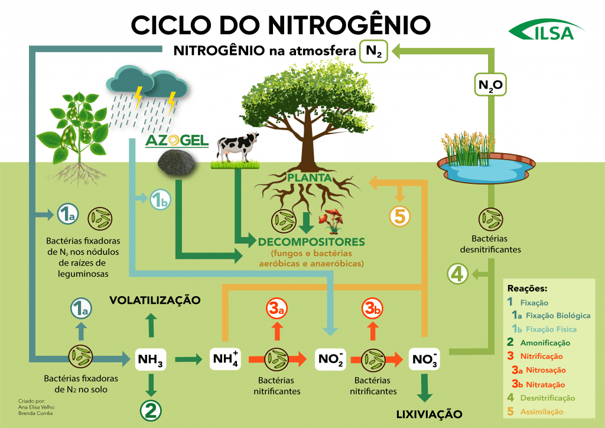
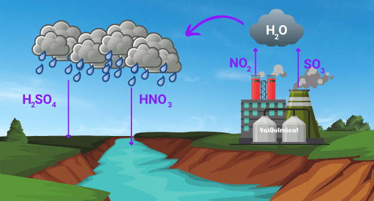

Representam o movimento dos elemtentos químicos entre os seres vivos e atmosfera, litosfera e hidrosfera do planeta.
O nitrôgenio é extremamente importante para os seres vivos. Está presente no ar que respiramos e na composição do nosso DNA. Além disso, tambem é aproveitadpo por plantas e bactérias e, tem papel fundamental na agricultura, sendo o principal elemento químico dos fertilizantes níveis elevados de Nitrogênioatmosférico.
Nos seres humanos, está presente na compoaição de aminoácidos e proteínas. Na natureza, é encontrado no solo e, principalmente, em vulcões. São absorvidos por Bactérias,mas a queima de combustíveis fósseis contaminados com enxofre levem ao aumento da concentração de dióxido de enxofre.
.jpg)
Os gases CO², NO² e SO², em excesso, reagem com vapor d' água para formar compostos ácidos.
A chuva ácida compromete estruturas e construções, além de diminuir a qualidade do solo. A acidifição de oceanos e rios diminui o PH da água, compromete a sobrevivência dos peixes.
